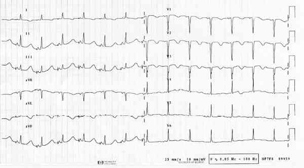
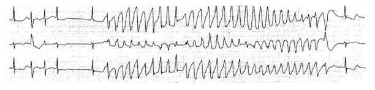

Bienvenue Sur Medical Education
Syndrome du QT long
Spécialité : cardiologie / pédiatrie /
Points importants
-
Deux formes : congénital ou acquis
-
Risque de torsade de pointe (TdP) ou FV pouvant entrainer syncope et mort subite
Présentation clinique / CIMU
SIGNES FONCTIONNELS
Présentation clinique / CIMU
SIGNES FONCTIONNELS
Généraux : liés aux complications rythmiques
- Vertiges
Spécifiques
- Syncope, mort subite
Peut être de découverte fortuite
CONTEXTE
Terrain
-
Congénital :
- ATCD personnel de syncope
- ATCD familiaux de syncope, mort subite
-
Acquis :
- désordres métaboliques : kypokaliémie, hypocalcémie, hypomagnésémie
- bradycardie
- prise de cocaïne
- intoxication aux organo-phosphorés
- hémorragie sous arachnoïdienne
- AVC
- myxpoedème
- hypothermie
- neuropathie
- SIDA
- infarctus du myocarde
- cardiomyopathie
-
médicaments :
- anti-arythmiques Ia et III, psychotropes, anti infectieux, anti histaminique
Facteurs de risque de développer une TdP
-
Congénital :
- génotype (LQT1, LQT2)
- hommes avant 12 ans
- femmes après 18 ans
- ATCD de syncope
- durée du QTcorrigé (QTc)
- association aux facteurs acquis d'allongement du QT
-
Acquis par traitement allongeant le QT :
- femme
- infarctus du myocarde, insuffisance cardiaque, valvulopathie, cardiomyopathie
- hypokaliémie
- ATCD familial de QTL
- polymédication avec traitements allongeant le QT
- bradycardie extrême
- QT long > 450 ms
Circonstances de survenue
-
Congénital :
- SQTL1 : syncope à l'effort (natation)
- SQTL2 : syncope lors d'un stress émotionnel (bruit)
- SQTL3 : syncope nocturne
- SQTL7 : dysmorphie faciale et paralysie périodique
- SQTL8 : déficience immunitaire, hypoglycémie, autisme, syndactylie
EXAMEN CLINIQUE
- En dehors d'un épisode de TdP, examen normal sauf morphotype particulier des QT congénitaux
EXAMENS PARACLINIQUES SIMPLES
ECG : QT long
 _194 ECG : QT long
- Mesure du QT du début du Q à la fin de l'onde T (voire de l'onde U si suit l'onde T)
- Moyenné sur 3 à 5 battements
- Mesuré dans les dérivations D2, V5 ou V6 (prendre la plus longue mesure)
-
Correction par la formule de Bazett (fonction de la fréquence cardiaque) :
- QTc = QT/RR0.5
-
QTc allongé :
- avant 15 ans QTc > 460 msec
- homme adulte QTc > 450 msec
- femme adulte QTc > 470 msec
- Morphologie de l'onde T : anormale (large, bifide, biphasique, alterne) ; peut prédire de génotype
ECG : torsade de pointe
 _309 Photo ECG : torsade de pointe
- Tachycardie ventriculaire non soutenue
- Rythme irrégulier
- Dissociation auriculo-ventriculaire
- Complexes QRS élargis, fréquence 180 à 250 bpm
- Rotation axiale progressive et cyclique autour de la ligne iso électrique
CIMU
- Tri 1 à 4
Signes paracliniques
BIOLOGIQUE
-
Rechercher systématiquement des troubles métaboliques : hypokaliémie, hypocalcémie, hypomagnésémie
Diagnostic étiologique
Diagnostic étiologique
Repose sur l'anamnèse
Acquise
- Désordre métabolique
- Médicaments allongeant le QT
- Pathologies allongeant le QT
Congénital
- Histoire familiale de syncope et mort subite
Diagnostic différentiel
-
Tachycardies à complexes larges (tachycardies ventriculaires, tachycardies supraventriculaires avec bloc de branche, fibrillation ventriculaire)
Traitement
TRAITEMENT PREHOSPITALIER/INTRAHOSPITALIER
Traitement
TRAITEMENT PREHOSPITALIER/INTRAHOSPITALIER
En cas de torsade de pointe
-
Stabilisation initiale :
- TdP persistante avec arrêt circulatoire : choc électrique externe
-
Suivi du traitement : prévention des récidives :
- arrêt des traitements allongeant le QT
- correction des troubles métaboliques
- sulfate de magnésium : 2 g IV en bolus puis perfusion continue 2 à 4 mg/min (adulte), chez l'enfant : 25 à 50 mg/kg (< 2 g) en 10 min
- en cas de bradycardie extrême : isoprénaline (Isuprel®) ou entrainement électrosystolique externe ou invasive (fréquence 100 à 200/min)
- si échec : bêtabloquant : propranolol chez l'adulte : 1 mg IVL par min sans dépasser 10 mg (2 amp), chez l'enfant : 0,1 mg/kg
En cas de QTL de découverte fortuite
- Discuter l'arrêt du traitement allongeant de QT
- Correction de troubles métaboliques
MEDICAMENTS
- Sulfate de magnésium : ampoule de 10 mL (1,5 g) ou 20 mL (3 g)
- Contre-indications : insuffisance rénale (clairance de la créatinine < 30 mL/kg)
- Pas de mélange avec les solutés alcalins
-
Posologie :
- adulte : 2 g IV bolus puis perfusion continue de 2 à 4 mg/min (1 à 2 g/h)
- enfant : 25 à 50 mg/kg (< 2 g) en 10 min
- effets secondaires : flush, douleur au point d'injection, vasodilatation
Surveillance
CLINIQUE
-
FC, PA
PARACLINIQUE
-
ECG
-
Biologique (kaliémie, calcémie, magnésémie)
Devenir / orientation
Devenir / orientation
Si syncope ou épisode de torsade de pointe
-
Critères d'admission :
- acquis : métabolique ou médicamenteux : déchoquage, réanimation cardio-vasculaire : soins intensifs de cardiologie
- congénital : soins intensifs de cardiologie
Si découverte fortuite QTL
- La décision d'orientation et de poursuite des investigations sera en accord avec le cardiologue et fonction de l'étiologie suspectée
- Contre-indication formelle aux médicaments allongeant le QT
- Correction des troubles métaboliques
- Eviter sport de compétition
Mécanisme / description
-
Anomalie électrophysiologique :
-
augmentation de la durée de la repolarisation myocardiaque ventriculaire
-
Anomalies des canaux ioniques transmembranaires congénitaux ou acquis entrainant une altération des courants ioniques transmembranaires ayant pour conséquence une augmentation de la durée du potentiel d'action des cellules cardiaques ventriculaires
-
QTL congénitaux :
-
mutation ou délétion génétiques altérant le fonctionnement d'un canal ionique potassique ou ionique différent suivant le gène incriminé. Huit formes décrites récessives ou dominante
-
phénotype différent suivant le gène incriminé
-
QTL acquis :
-
pas de risque identique de TdP pour tous les patients
-
existence de facteurs de risques et de prédisposition génétique associée
Bibliographie
-
Adnet F, Lapostolle F, Petrovic T.Ecg en urgence. éditeur Arnette, Paris 2003
-
Goldenberg I, Zareba W, Moss AJ. Long QT Syndrome.
Curr Probl Cardiol. 2008 Nov;33(11):629-94. Review
-
Gupta A, Lawrence AT, Krishnan K, Kavinsky CJ, Trohman RG. Current concepts in the mechanisms and management of drug-induced QT prolongation and torsade de pointes.
Am Heart J. 2007 Jun;153(6):891-9. Review
-
Khan IA. Long QT syndrome: diagnosis and management.
Am Heart J. 2002 Jan;143(1):7-14. Review
-
Lacroix. Urgences et réanimation pédiatrique, ED Masson
-
Lupoglazoff JM, Denjoy I, Neyroud N, Guicheney P, Casasoprana A, Coumel P. Congenital long QT syndrome]
Presse Med. 1998 Jun 13;27(21):1029-34. Review. French
-
Mancuso EM, Brady WJ, Harrigan RA, Pollack M, Chan T. Electrocardiographic manifestations: long QT Syndrome.
J Emerg Med. 2004 Nov;27(4):385-93
-
Probst V, Le Marec H. Syndromes de Bruggada, QT long ,QT court Cardiologie et Maladies Cardiovasculaires Société Française de Cardiologie Ed Masson 2007. 1060-6
- augmentation de la durée de la repolarisation myocardiaque ventriculaire
- mutation ou délétion génétiques altérant le fonctionnement d'un canal ionique potassique ou ionique différent suivant le gène incriminé. Huit formes décrites récessives ou dominante
- phénotype différent suivant le gène incriminé
- pas de risque identique de TdP pour tous les patients
- existence de facteurs de risques et de prédisposition génétique associée
Bibliographie
- Adnet F, Lapostolle F, Petrovic T.Ecg en urgence. éditeur Arnette, Paris 2003
-
Goldenberg I, Zareba W, Moss AJ. Long QT Syndrome.
-
Gupta A, Lawrence AT, Krishnan K, Kavinsky CJ, Trohman RG. Current concepts in the mechanisms and management of drug-induced QT prolongation and torsade de pointes.
-
Khan IA. Long QT syndrome: diagnosis and management.
- Lacroix. Urgences et réanimation pédiatrique, ED Masson
-
Lupoglazoff JM, Denjoy I, Neyroud N, Guicheney P, Casasoprana A, Coumel P. Congenital long QT syndrome]
-
Mancuso EM, Brady WJ, Harrigan RA, Pollack M, Chan T. Electrocardiographic manifestations: long QT Syndrome.
- Probst V, Le Marec H. Syndromes de Bruggada, QT long ,QT court Cardiologie et Maladies Cardiovasculaires Société Française de Cardiologie Ed Masson 2007. 1060-6
Auteur(s) : Sandrine CHARPENTIER